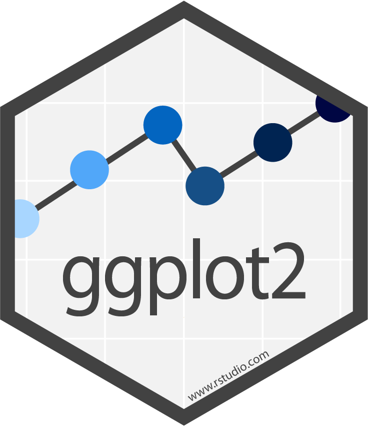
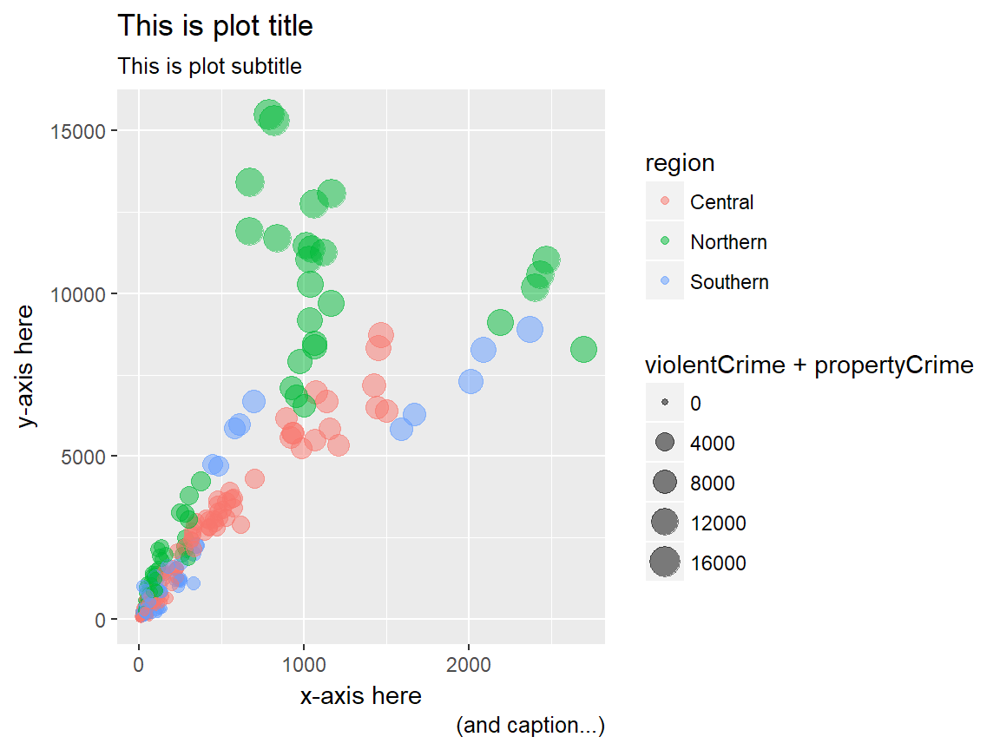
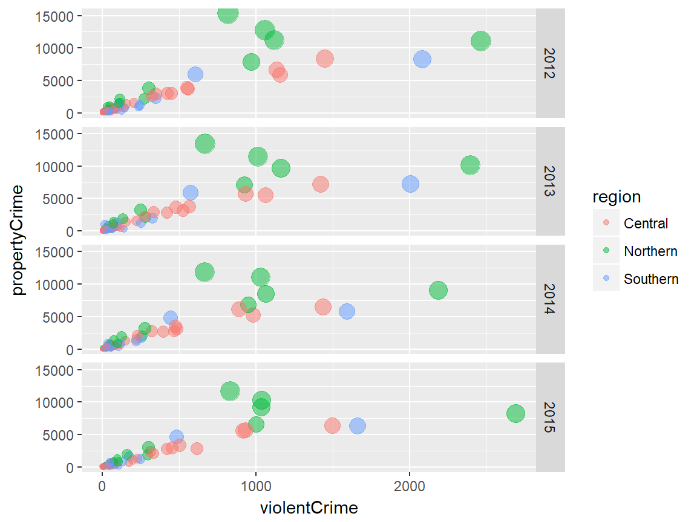
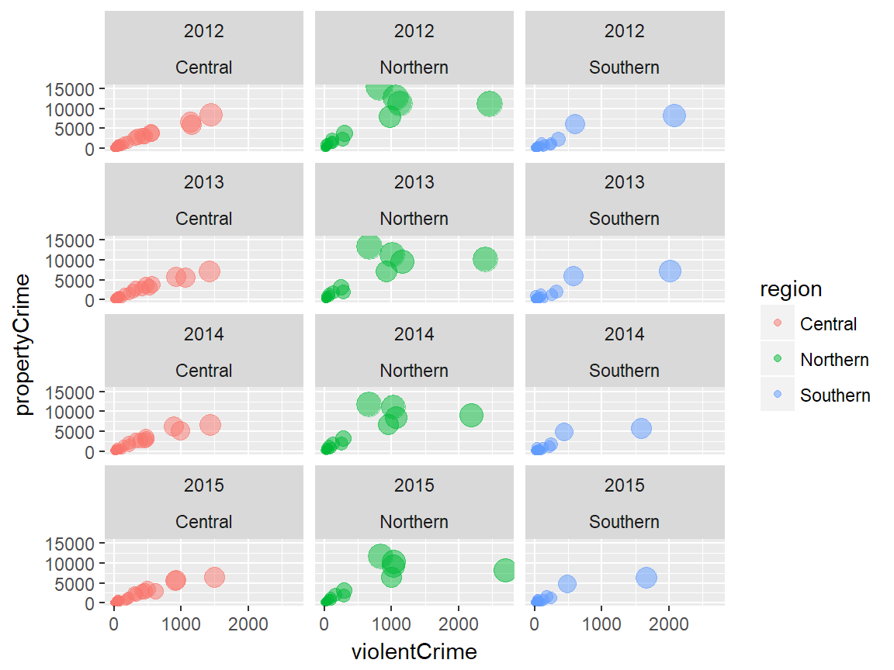
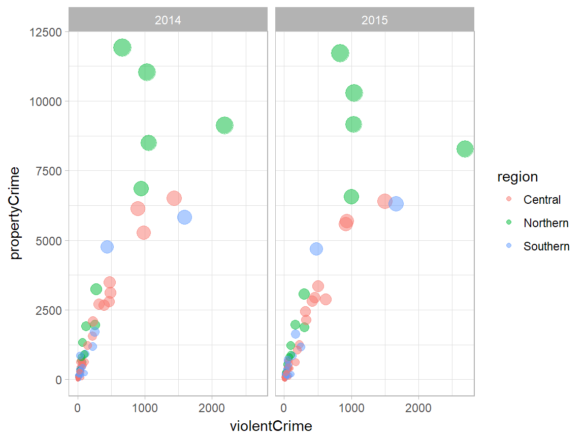
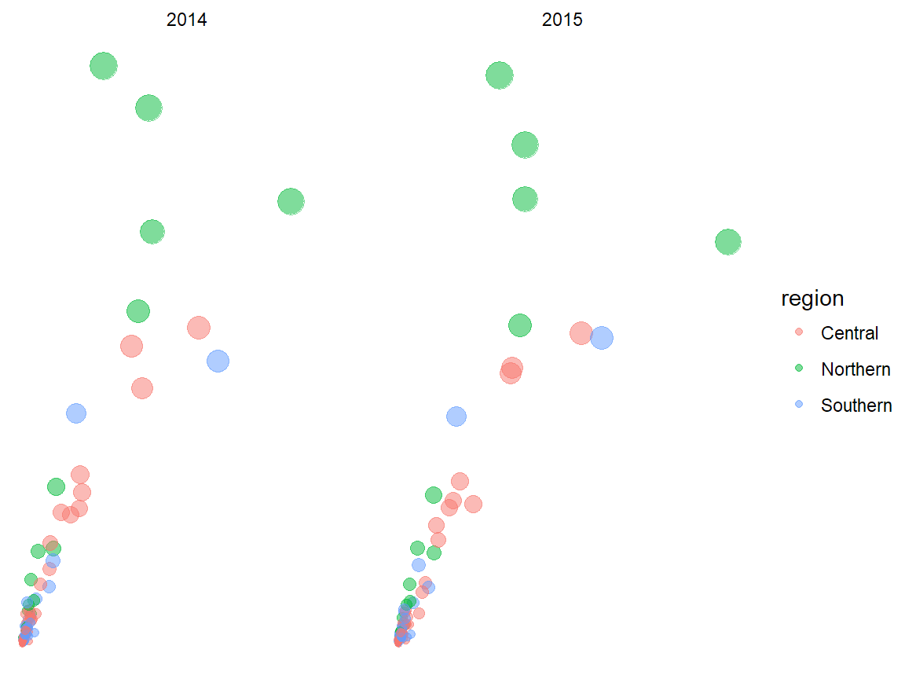

R Workshop: Module 4 (1)
Bobae Kang
April 4, 2018

This page contains the notes for the first part of R Workshop Module 4: Data visualization with R, which is part of the R Workshop series prepared by ICJIA Research Analyst Bobae Kang to enable and encourage ICJIA researchers to take advantage of R, a statistical programming language that is one of the most powerful modern research tools.
Links
Click here to go to the workshop home page.
Click here to go to the workshop Modules page.
Click here to view the accompanying slides for Module 4, Part 1.
Navigate to the other workshop materials:
Data visualization with R (1): The Grammar of Graphics
In Module 4, we will be exploring data visualization in R. Although base R offers some data visualiation capabilities, a visualization package of tidyverse called ggplot2 has become the de facto standard for data visualization in R. Hence, we will begin with learning the basics of ggplot2.
The Grammar of Graphics
The name of the package ggplot2 comes from the notion of the “grammar of graphics,” proposed by statistician and computer scientist Leland Wilkinson. Let’s take a quick look at this notion, its origin, and how the ggplot2 package relates it.
Wilkinson’s “grammar”
“The grammar of graphics takes us beyond a limited set of charts (words) to an almost unlimited world of graphical forms (statements).
-Wilkinson, L. (2005), p.1”
In his book, The Grammar of Graphics (2005), Wilkinson proposes a set of principles and terminology for defining and constructing statistical graphics. We may see this book as a theoretical elaboration of his preceding project called the Graphical Production Library (GPL), an implementation of “a language for quantitative graphics” (Wklinson et al., 2000). An underlying philosophy of GPL is that, “Instead of treating a graphics display as a viewer for underlying data, GPL treats data as an accesorry to viewing a graph.”
Wilkinson’s “grammar” has the following components:
- Data
- Transformation
- Element
- Scale
- Guide
- Coordinate system
A graphic object then consists of, or is parameterized by, these components. It is a more modular apporach to visulizing data. We won’t dig any further into each component as defined by Wilkinson and his colleagues. Suffice it to say, however, that Hadley Wickham’s ggplot2 is strongly influneced by Wilkinson’s “grammar” with certain changes.
ggplot2 package
Source: tidyverse.com
{kind=link}
ggplot2 is R ecosystem’s response to Wilkinson’s grammar of graphics. It is an R package developed by Hadley Wickham, one of the main authors of many tidyverse packages.
Motivation
This article proposes an alternative parameterization of the [graphical] grammar, based around the idea of building up a graphic from multiple layers of data. The grammar differs from Wilkinson’s in its arrangement of the components, the development of a hierarchy of defaults, and in that it is embedded inside another programming language.
-Wickham, H. (2010), p.4
In his article, “A Layered Grammar of Graphics” (2010), Wickham explains his motivation for ggplot2. In short, ggplot2 is an alternative to Wilkinson’s grammar, replacing “element” in the latter with more modular layers.
Comparison

Source: Wickham, H. (2010). “A Layered Grammar of Graphics.”
The figure above offers a quick summary of how ggplot2 compares to Wilkinson’s grammar. Refer to Wickham (2010) for a detailed explanation.
Basic components
Enough of backgrounds. Let us now really get started with ggplot2. First we explore three basic components of ggplot2:
- Data and aesthetic mappings
- Geometic objects
- Labels
Data and aesthetic mappings
# data and aesthetics
ggplot(data, aes(x, y, ...))datais a data frame object (or its variant)aes()defines aesthetic mappingsxandyare columns indatainput to be mapped to the x-axis and y-axis
Geometic objects
# adding one or more geometric objects
ggplot(data, aes(x, y, ...)) +
geom_object()
# with geom_specific `aes`
ggplot(data) +
geom_object(aes(x, y, ...))- There are many “geom” objects for different graph types:
- A
geomobject can take its ownaesinput- All
aesspecifications can be directly provided for each geometric object
- All
Basic geom object
| geom | Description | Input |
|---|---|---|
geom_histogram |
Histograms | Continous x |
geom_bar |
Bar plot with frequncies | Discrete x |
geom_col |
Bar plot with values | Discrete x and continuous y |
geom_point |
Points/scattorplots | Discrete/continuous x and y |
geom_jitter |
Jittered points | Discrete/continuous x and y |
geom_line |
Line plots | Discrete/continuous x and y |
geom_abline |
Reference line | intercept and slope value |
geom_hline, geom_vline |
Reference lines | xintercept or yintercept |
Example
# geom histogram example
data <- ispcrime %>% filter(year == 2015, county != "Cook")
ggplot(data, aes(violentCrime)) +
geom_histogram()# geom col example
data <- ispcrime %>% filter(county == "Cook") %>% gather("type", "count", murder:aggAssault)
ggplot(data, aes(type, count, fill = type)) +
geom_col(width = 0.8)# geom point example
data <- ispcrime %>% filter(county != "Cook") %>% left_join(regions)
ggplot(data, aes(violentCrime, propertyCrime, color = region)) +
geom_point(aes(size = violentCrime + propertyCrime), alpha = .5)
# geom line example
data <- ispcrime %>% filter(county == "Cook")
ggplot(data, aes(year, violentCrime)) +
geom_line(color = "maroon", size = 1.5) +
geom_hline(yintercept = mean(data$violentCrime), linetype = "longdash")
Other geom objects
| geom | Description | Input |
|---|---|---|
geom_density |
Smoothed density estimates | Continous x |
geom_density2d |
Contours of a 2-d density estimates | Continous x |
geom_boxplot |
Box plots | Disc. x and cont. y |
geom_smooth |
Smoothed conditional means | |
geom_text, geom_label |
Text | |
geom_polygon |
Polygons |
- See the official reference page for the full list of
geoms.
Labels
# adding labels
plot + labs(title, subtitle, caption, x, y, ...)- Each argument of
labs()take a character vector of length 1titleandsubtitleappear at the top-left.captionappears at the bottom-rightxandyare for x-axis and y-axis names
- Adjusting the position and style of labels is handled via
theme()
alternatively …
plot +
xlab(label) +
ylab(label) +
ggtitle(label, subtitle = NULL)- Each argument of the
labs()can be added with a separate function.xlab()is for x-axis nameylab()is for y-axis nameggtitle()is for plot title and subtitle
Example
# a generic example with title, subtitle, and axes names
plot +
labs(
title = "This is plot title", subtitle = "This is plot subtitle",
x = "x-axis here", y = "y-axis here",
caption = "(and caption...)"
)
# a title with mathematical expressions
plot +
ggtitle(label = expression(paste("Another plot title with math expressions like ", pi, " and ", sigma^{2})))Additional components
- Scales
- Guides
- Coordinate systems
- Facets
- Themes
Scales
- Scales control “the details of how data values are translated to visual properties”
- Scale limits
- Position scales (discrete, continuous, datetime)
- Others
Scale limits
plot +
xlim(...) +
ylim(...) +
lims(...)xlim()changes x-axis limitsylim()changes y-axis limitslims()is a general function to change limits...in all three functions is a name-value pair, where the name is an aesthetic and the value is either a length-2 numeric, a character, a factor, or a datetime
# limit x axis to 2000; this removes points with violentCrime > 2000
plot + xlim(0, 2000)
Position scales
Position scales (discrete)
# replace * with x or y
scale_*_discrete(name, breaks, labels, limits, ...)Common scale_* arguments
| Argument | Description |
|---|---|
name |
a name of the scale, used as the axis label or the legend title |
breaks |
controls the breaks in the guide, which can be a character vector |
labels |
controls the lable for each break; its input must be the same length as breaks input |
limits |
a character vector specifying the data range for the scale |
Position scales (continuous)
# replace * with x or y
scale_*_continuous(name, breaks, labels, limits, ...)
scale_*_log10(...)
scale_*_sqrt(...)
scale_*_reverse(...)Position scales (datetime)
# replace * with x or y
scale_*_date(name, breaks, labels, limits, ...)
scale_*_datetime(...)
scale_*_time(...)# apply the log 10 scale to the y-axis
plot + scale_y_log10()Custom scale “manuals”
scale_*_manual(name, breaks, labels, limits, ..., values)- Scale manuals is used to create my own discrete scale
- “Manual” is available for:
colourfillsizeshapelinetypealpha
plot + scale_color_manual(
name = "",
breaks = c("Central", "Northern", "Southern"),
labels = c("Central region", "Northern region", "Southern region"),
values = c("#00ffff", "#ffff00", "#ff00ff")
)Other custom scales
ggplot2 offers many more functions to customize scales.
See the full documentation on scales here.
Guides
guides(...)
guide_legend(...)guidescan be used to set (or remove) guides for each scaleguide_legend()can be used to specify the legend components for each visual properties (e.g.colour,size,alpha, etc.)guide_legned()is used as an input for each scale argument inguide()
Example
plot + guides(
colour = guide_legend(title = "Region", title.position = "bottom"),
size = FALSE
)
Coordinate systems
plot + coord_cartesian()- The default system is
coord_cartesian - Can be tweatked with:
coord_fixed,coord_flip,coord_mapandcoord_trans - An alternative, polar coordiante system can be used with
coord_polar - Most commonly used for creating a pie chart
Example
# default plot
plot
# with coord_flip()
plot + coord_flip()# pie chart with coord_polar()
ggplot(ispcrime %>% filter(county == "Cook") %>% gather("type", "count", murder:aggAssault), aes("", count, fill = type)) +
geom_col(width = 1) +
coord_polar("y")Facets
plot + facet_grid(facets, scales, ...)
plot + facet_wrap(facets, nrow, ncol, scales, ...)- A great way to visualize multi-dimensional data as a series of 2D graphes
facetsinput takes a “formula” according to which the faceting is applied
facet_grid vs facet_wrap
facet_grid()andfacet_wrap()are mostly similar to each other- However, they differs where:
facet_grid()facets the plot with a variable in a single direction (horizontal or vertical)facet_wrap()simply places the facets next to each other and wraps them accoridng to the provided number of columns and/or rows.
Facet formulas
| Type | Formula | Description |
|---|---|---|
| Grid | facet_grid(. ~ x) |
Facet horizontally across x values |
| Grid | facet_grid(y ~ .) |
Facet vertically across y values |
| Grid | facet_grid(y ~ x) |
Facet 2-dimensionally |
| Wrap | facet_wrap(~ x) |
Facet across x values |
| Wrap | facet_wrap(~ x + y) |
Facet across x and y values |
Example
# facet_grid horizontal
plot + facet_grid(. ~ region)
# facet_grid horizontal with free scales
plot + facet_grid(. ~ region, scales = "free")# facet_grid vertical
plot + facet_grid(year ~ .)# facet_grid two-dimensional
plot + facet_grid(year ~ region)
# facet wrap
plot + facet_wrap(~ year)
# facet wrap with specified nrow/ncol
plot + facet_wrap(~ year, ncol = 3)
# facet wrap with multiple variables
plot + facet_wrap(~ year + region, ncol = 3)
Themes
# themes
plot + theme_gray(base_size = 11, base_family = "")ggplot2offers several predefined themes- the default theme is
theme_gray()(ortheme_grey()) base_sizecontrols the base font sizebase_familycontrols the base font family (“serif”, “sans”, “mono”)
- the default theme is
ggthemespacakge offers additional predefined themes
Example
plot + theme_gray() # this is the default
plot + theme_bw()
plot + theme_linedraw()plot + theme_light()plot + theme_dark()
plot + theme_minimal()plot + theme_classic()
plot + theme_void()
plot + ggthemes::theme_economist()
plot + ggthemes::theme_fivethirtyeight()
plot + ggthemes::theme_hc()
plot + ggthemes::theme_wsj()
plot + theme(...)themehas arguments to control and motify individual components of a plot theme:- all line, rectangular, text and title elements
- aspect ratio of the panel
- axis title, text, ticks, and lines
- legend background, margin, text, title, position, and more
- panel aspect ratio, border, and grid lines
- and more
- Read the full documentation here
Resources
ggplot2official reference- “Data Visualization Cheat Sheet” by RStudio
- R Graphics Cookbook by Winston Chang
ggplot2tutorials in r-statistics.co by Selva Prabhakaran- Extending
ggplot2:ggplot2extentions website by Daniel Emaasit
References
- Grolemund, G. & Wickham, H. (2017).“Data visualization”. R for Data Science
- Tidyverse. (n.d.). “References”. ggplot2.tidyverse.org
- Wickham, H. (2010). “A Layered Grammar of Graphics”. Journal of Computational and Graphical Statistics 19(1):3-28.
- Wilkinson, L. (2005). The Grammar of Graphics.
- Wilkinson, L., Rope, D., Carr, D. & Rubin, M. (2000). “The Language of Graphics”. Journal of Computational and Graphical Statistics 9(3):530-543.